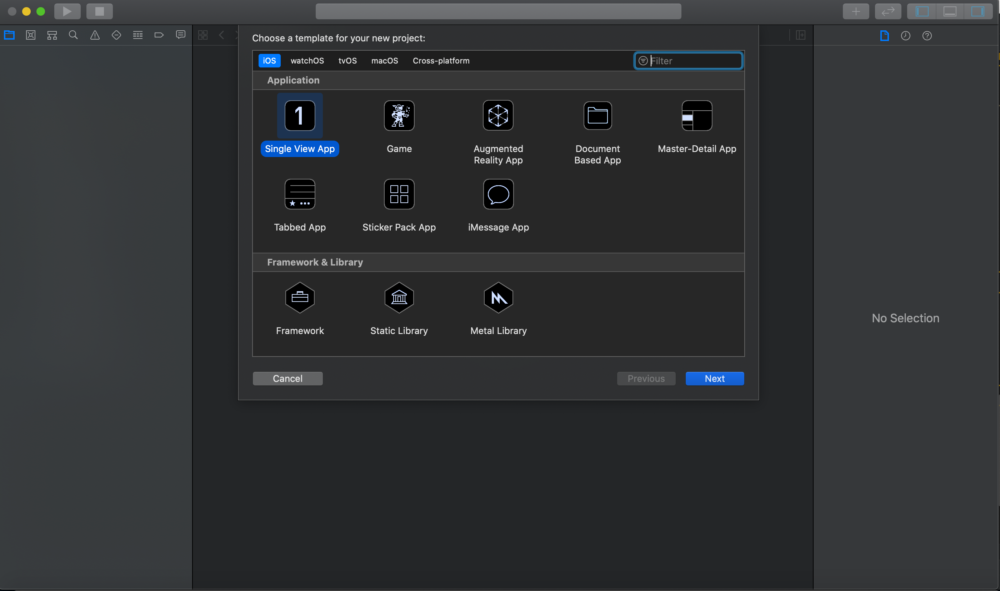

iOS - efekt 1
Autor - Artur Kasperek
Porównanie technologiczne
- Swift ( natywne ) vs
- React Native vs
- Cordova
Sposób generowania GUI
Swift
GUI w tym przypadku jest generowane natywnie. To znaczy, że tworząc różne elementy jak przyciski, obrazki czy też pola tekstowe używamy natywnych elementów dla systemu operacyjnego. Nasz kod jest bezpośrednio związany z tymi elementami bez żadnych pośredników
React Native
Podobnie jak w przypadku Swifta elementy są natywne. Interakcja z elementami ( np onClick ) nie jest już bezpośrednia jak w przypadku swifta, wymaga pośrednika
Cordova
Elementy GUI nie są natywne. Elementy GUI to elementy dostępne w przeglądarce. GUI jest renderowane przez przeglądarkę
Współdziałanie z systemem
Swift
Proces który zawiera logikę naszej aplikacji działa w natywny sposób i potrafi komunikować się bezpośrednio z logiką renderującą
React Native
Proces który zawiera logikę naszej aplikacji jest napisany w JS i jest odzielnym bytem. Istenieje dodatkowy pomost dzięki któremu proces w JSie może komunikować się z procesem natywnym

Cordova
Podczas uruchamiania aplikacji w Cordovie jest uruchamiana przeglądarka. Podobnie jak w React Native jest to osobny byt. W przeciwieństwo do React Native renderowaniem GUI zajmuje się przeglądarka

Swift
Natywnym językiem dla Apple jest język Swift. Jest on kompilowany do natywnego kodu dla urządrzeń iOS. W tym celu kod swifta jest kompilowany do formatu pośredniego LLVM, dalej LLVM posiada wiele backendów które służą do generowania natywnego assembly
React Native
Używany tutaj języka progamowania JavaScript. Platforma na używanie innych języków, np TypeScript, ale muszą one być transpilowane do JavaScriptu. JavaScript który jest uruchominy na urządeniu mobilnym działa na silniku V8 który odpala nasz kod z logiką
Cordova
Tak samo jak w przypadku React Native mamy dostępny JavaScript oraz języki które się transpilują do JS, typu TypeScript. Dodatkowo możemy korzystać ze wszystkich języków które się kompilują do webAssembbly, np Rust albo C#. W każdym przypadku to przeglądarka zajmuje się uruchamianiem danego języka
Swift ( xCode )
Mamy dostępny designer do budowania UI, możemy odpalić w tle symulator iOS.

React Native
Nie ma możliwość użycia designera. Aplikacja w trybie developerskim daje nam dostęp do debugera oraz możemy robić inspeckję elementów
Cordova
Nie ma możliwość użycia designera. Aplikację możemy odpalić w symulatorze, tam mamy dostęp do narzędzi deweloperskich przeglądarki
Ogólne odczucia są pozytywne. Na początku mamy wizard który ułatwia nam proces tworzenia projektu

Edytor jest bardzo intuicyjny, mamy możliwość dodawania w łatwy sposób kontrolek
Możemy triggerować w designerze customowe akcje
Gdy przełączymy widok na designer + kod, mamy możliwość za pomocą drag&drop programować niektóre rzeczy
Przeciągając możemy dodawać akcje typu onClick